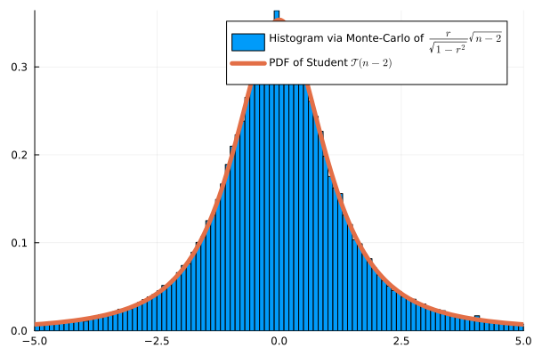
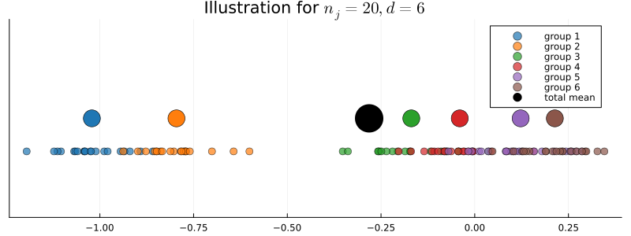
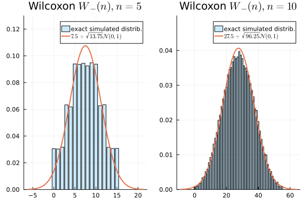

Correlation, Homogeneity and Dependency
Correlation Test

Correlation Test
Monte Carlo Simulation with \(n=4\):

ANOVA Test

\(\chi^2\) Homogeneity and Independence Tests
\(\chi^2\) Homogeneity Test
- \(d\) different bags (or groups), each containing balls of \(m\) potential colors.
- If \(d = 3\) and \(m=2\), we observe the following \(2\times 3\) matrix of counts:
| bag 1 | bag 2 | bag 3 | Total | |
|---|---|---|---|---|
| color 1 | \(X_{11}\) | \(X_{12}\) | \(X_{13}\) | \(R_1\) |
| color 2 | \(X_{21}\) | \(X_{22}\) | \(X_{23}\) | \(R_2\) |
| Total | \(N_1\) | \(N_2\) | \(N_3\) | \(N\) |
Example: Soft drink preferences
- Split population into \(3\) categories: Young Adults (18-30), Middle-Aged Adults (31-50), and Seniors (51 and above).
- \(H_0\): The groups are homogeneous in terms of soft drink preferences
| Age Group | Young Adults | Middle-Aged | Seniors | Total |
|---|---|---|---|---|
| Coke | 60 | 40 | 30 | 130 |
| Pepsi | 50 | 55 | 25 | 130 |
| Sprite | 30 | 45 | 55 | 130 |
| Total | 140 | 140 | 110 | 390 |
- \(N_1 \hat p_1 = 140*\frac{130}{390} \approx 46.7\)
\[ \begin{aligned} \psi(X) &= \frac{(60-46.7)^2}{46.7}&+ \frac{(40-46.7)^2}{46.7}&+\frac{(30-36.7)^2}{36.7} \\ &+\frac{(50-46.7)^2}{46.7}&+ \frac{(55-46.7)^2}{46.7}&+\frac{(25-36.7)^2}{36.7}\\ &+\frac{(30-46.7)^2}{46.7}&+ \frac{(45-46.7)^2}{46.7}&+\frac{(55-36.7)^2}{36.7}\\ &\approx 26.57 \end{aligned} \]
1-cdf(Chisq(4), 26.57) # 2.4e-5, reject H_0\(\chi^2\) Independence Test
Example of contingency table:
| Gender | Male | Female | Total |
|---|---|---|---|
| Coffee | 30 | 20 | 50 |
| Tea | 28 | 22 | 50 |
| Total | 58 | 42 | 100 |
Expected counts:
| Gender | Male | Female | Total |
|---|---|---|---|
| Coffee | 29 | 21 | 50 |
| Tea | 29 | 21 | 50 |
| Total | 58 | 42 | 100 |
- Degree of freedom: \((2-1)(2-1) = 1\)
Wilcoxon’s Signed Rank
Symetric Random Variable
Dependency Problem for Paired Data
Wilcoxon’s Signed Rank Test
Wilcoxon’s Signed Rank Test
This approximation fits well the exact distribution. Monte-Carlo simulation:

To generate a \(W_-\) under \(H_0\) in Julia:
k = rand(Binomial(n, 0.5))
w = sum(randperm(n)[1:k])Effect of Drug on Blood Pressure
- \(H_0\): the drug has no effect. \(H_1\): it lowers the blood pressure
| Patient | \(X_i\) (Before) | \(Y_i\) (After) | \(D_i = X_i-Y_i\) | \(R_i\) |
|---|---|---|---|---|
| 1 | 150 | 140 | 10 | 6 (+) |
| 2 | 135 | 130 | 5 | 5 (+) |
| 3 | 160 | 162 | -2 | 2 (-) |
| 4 | 145 | 146 | -1 | 1 (-) |
| 5 | 154 | 150 | 4 | 4 (+) |
| 6 | 171 | 160 | 11 | 7 (+) |
| 7 | 141 | 138 | 3 | 3 (+) |
- \(W_- = 1+2 = 3\).
- From a simulation, we approx \(\mathbb P(W_-=i)\), for \(i \in \{0, 1, 2, 3, 4, 5,6\}\) under \(H_0\) by
[0.00784066, 0.00781442, 0.00781534, 0.01563892, 0.01562184, 0.02343478]- From a simulation, \(p_{value}=\mathbb P(W_- \leq 3) \approx 0.039 < 0.05\)